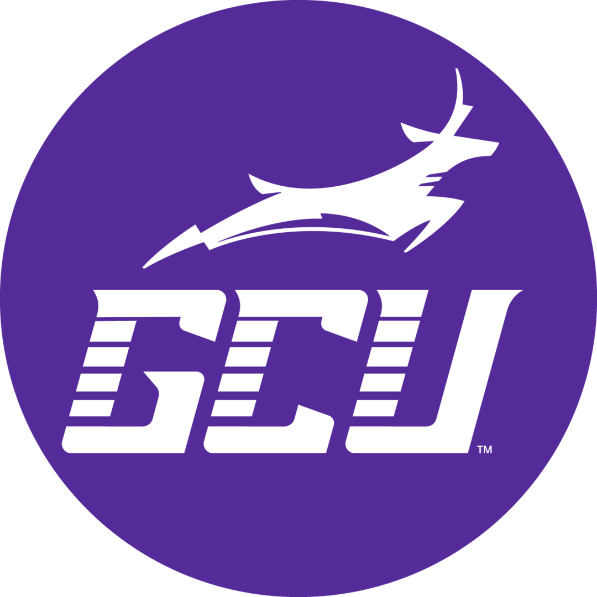

This course introduces the fundamental concepts and syntax of the web development languages including HTML, CSS, and JavaScript. The course focuses on foundation required to build complex dynamic web applications. Prerequisite: none.
4
There is no textbook for this class. Weekly readings are from the W3 schools web site.
Install this per the Activity 1 guide and per the instructions as specified by your instructor
This course requires the use of BootStrap Studio.
Access the BootStrap Studio website. Then, scroll down to the bottom of
the Home Page to the FAQ link. Click on the FAQ link. Scroll to the bottom
of the FAQ where the question is asked if there "Is a student license."
Click on the Apply link.
Fill out the Application for the Student License form and submit the
request.
Be sure to install as specified by your instructor.
This course requires students to have a laptop. Students will use their laptop to complete the course assignments. Technical specifications can be found un the University Policy Handbook.
Refer to this resource when completing the course CLC Milestone assignments.
Refer to this resource when completing the course activities.
In this topic, students are introduced to the HTML markup language where they learn basic structure, basic elements of an HTML document, and how to work with text and basic controls. The students finish this topic by learning the developer tools available to them, as well as how web servers work to help support development of HTML-based applications.